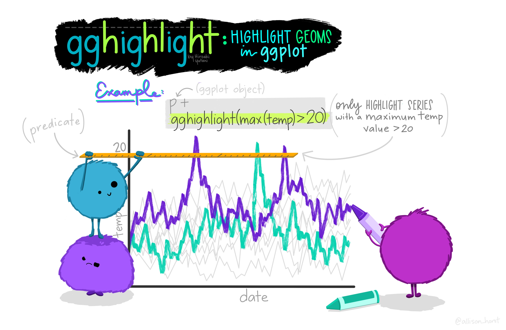
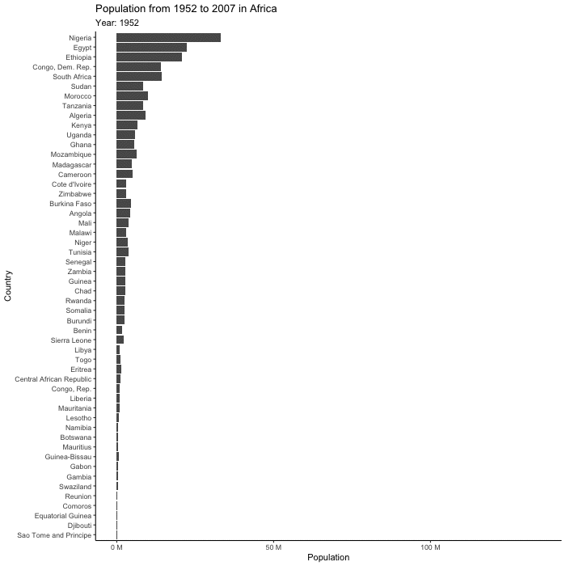

Leftover tidbits
Week 13
Introduction
Today we are going to go over a bunch of stuff I thought was interesting but didn’t fit specifically into any of the other lessons. This includes some cool ggplot extension packages we haven’t gone over yet, and heatmaps that utilize base R plotting.
Load libraries
Loading the libraries that are for each section. Individual libraries are before each section so you can see which go with what plot types.
library(tidyverse) # for everything── Attaching core tidyverse packages ──────────────────────── tidyverse 2.0.0 ──
✔ dplyr 1.1.4 ✔ readr 2.1.5
✔ forcats 1.0.0 ✔ stringr 1.5.1
✔ ggplot2 4.0.0 ✔ tibble 3.3.0
✔ lubridate 1.9.4 ✔ tidyr 1.3.1
✔ purrr 1.1.0
── Conflicts ────────────────────────────────────────── tidyverse_conflicts() ──
✖ dplyr::filter() masks stats::filter()
✖ dplyr::lag() masks stats::lag()
ℹ Use the conflicted package (<http://conflicted.r-lib.org/>) to force all conflicts to become errorsReally start using an Rproject 📽️

I have noticed that many of you are still not using RProjects. I would really recommend that for easy file management that you do. Here is an a chapter in R for Data Science on how to set one up. If you want to start using Git in the future, you will need to set up a project.
gghighlight 🔦

The package gghighlight allows you to highlight certain geoms in ggplot. Doing this helps your reader focus on the thing you want them to, and helps prevent plot spaghetti. To practice with gghighlight we are going to use some data from the R package gapminder
Install
installl.packages("gghighlight")
install.packages("gapminder")Load libraries
First let’s load our libraries.
library(gghighlight) # for highlighting
library(gapminder) # where data isWrangle
We can create a dataframe that includes only the data for the countries in the continent Americas.
gapminder_americas <- gapminder |>
filter(continent == "Americas")Plot
If we look at all the countries at once, we get plot spaghetti 🍝.
gapminder_americas |>
ggplot(aes(x = year, y = lifeExp, group = country, color = country)) +
geom_line() +
theme_minimal() +
labs(x = "Year",
y = "Life Expectancy (years)",
title = "Life Expectancy in Countries in the Americas",
subtitle = "From 1952 to 2007",
caption = "Data from gapminder.org")
Create a lineplot showing the life expectacy over 1952 to 2007 for all countries, highlighting the United States.
# highlight just the US
gapminder_americas |>
ggplot(aes(x = year, y = lifeExp, group = country, color = country)) +
geom_line() +
gghighlight(country == "United States") +
theme_minimal() +
labs(x = "Year",
y = "Life Expectancy (years)",
title = "Life Expectancy in Countries in the Americas",
subtitle = "From 1952 to 2007",
caption = "Data from gapminder.org")
Facet our plot, and highlight the country for each facet.
# facet and highlight each country
gapminder_americas |>
ggplot(aes(x = year, y = lifeExp)) +
geom_line(aes(color = country)) +
gghighlight() +
theme_minimal() +
theme(legend.position = "none",
strip.text.x = element_text(size = 8),
axis.text.x = element_text(angle = 90)) +
facet_wrap(vars(country)) +
labs(x = "Year",
y = "Life Expectancy (years)",
title = "Life Expectancy in Countries in the Americas",
subtitle = "From 1952 to 2007",
caption = "Data from gapminder.org")
patchwork, a little more 📈📊📉

We have talked a bit about patchwork in the lecture on PCA but its such a useful package I wanted to go over it a bit more. The goal of patchwork is to make it very simple to combine plots together.
Load libraries
library(patchwork)
library(palmerpenguins) # for making some plots to assemble
Attaching package: 'palmerpenguins'The following objects are masked from 'package:datasets':
penguins, penguins_rawMake some plots
plot1 <- penguins |>
ggplot(aes(x = species, y = body_mass_g, color = species)) +
geom_boxplot()
plot2 <- penguins |>
ggplot(aes(x = bill_length_mm, y = bill_depth_mm, color = species)) +
geom_point()
plot3 <- penguins |>
drop_na() |>
ggplot(aes(x = island, y = flipper_length_mm, color = species)) +
geom_boxplot() +
facet_wrap(vars(sex))Combine plots
The simplest ways to combine plots is with the plus sign operator +. The forward slash / stacks plots. The pipe | puts plots next to each other. You can learn more about using patchwork here.
(plot1 + plot2) / plot3 
You can also add annotation and style to your plots. Learn more here.
(plot1 + plot2) / plot3 + plot_annotation(tag_levels = c("1"),
title = "Here is some information about penguins")
gganimate 💃

https://gganimate.com/reference/transition_states.html
Install
install.packages("gganimate") # gganimate
install.packages("gapminder") # gapminder data for example
install.packages("magick") # for gif renderingLoad libraries
library(gganimate)
library(ggrepel) # for text/label repelling
library(magick) # for gif renderingLinking to ImageMagick 6.9.12.93
Enabled features: cairo, fontconfig, freetype, heic, lcms, pango, raw, rsvg, webp
Disabled features: fftw, ghostscript, x11Plot
First let’s make a base plot. Note that this measure of population isn’t actually correct as its summing all of the populations across all the years.
(base_plot <- gapminder |>
filter(continent == "Africa") |>
ggplot(aes(x = pop, y = reorder(country, pop))) +
geom_col() +
scale_x_continuous(labels = scales::unit_format(unit = "M", scale = 1e-6)) +
theme_classic() +
labs(title = "Population from 1952 to 2007 in Africa",
x = "Population",
y = "Country"))
(plot_to_animate <- base_plot +
labs(subtitle = "Year: {frame_time}") + # label subtitle with year
transition_time(year) + # gif over year
ease_aes()) # makes the transitions smoother# set parameters for your animation
animated_plot <- animate(plot = plot_to_animate,
duration = 10, # number of seconds for whole animation
fps = 10, # framerate, frames/sec
start_pause = 20, # show first time for 20 frames
end_pause = 20, # show end for 20 frames
width = 700, # width in pixels
height = 700, # height in pixels
renderer = magick_renderer()) # program for renderingPrint your animation.
animated_plot
Save
Save your animation.
# save it
anim_save(filename = "gapminder_gif.gif",
animation = last_animation())ggradar 📡
The package ggradar allows you to create radar plots, which allow the plotting of multidimensional data on a two dimension chart. Typically with these plots, the goal is to compare the variables on the plot across different groups. We are going to try this out with the coffee tasting data from the distributions recitation.
Install ggradar if you don’t already have it. This package is not available on CRAN for the newest version of R, so we can use devtools and install_github() to install it. You could also try using install.packages() and see if that works for you.
devtools::install_github("ricardo-bion/ggradar",
dependencies = TRUE)library(ggradar)
library(scales) # for scaling data
# load coffee data from distributions recitation
tuesdata <- tidytuesdayR::tt_load('2020-07-07')
# extract out df on coffee_ratings
coffee <- tuesdata$coffee_ratings
# what are the column names again?
colnames(coffee) [1] "total_cup_points" "species" "owner"
[4] "country_of_origin" "farm_name" "lot_number"
[7] "mill" "ico_number" "company"
[10] "altitude" "region" "producer"
[13] "number_of_bags" "bag_weight" "in_country_partner"
[16] "harvest_year" "grading_date" "owner_1"
[19] "variety" "processing_method" "aroma"
[22] "flavor" "aftertaste" "acidity"
[25] "body" "balance" "uniformity"
[28] "clean_cup" "sweetness" "cupper_points"
[31] "moisture" "category_one_defects" "quakers"
[34] "color" "category_two_defects" "expiration"
[37] "certification_body" "certification_address" "certification_contact"
[40] "unit_of_measurement" "altitude_low_meters" "altitude_high_meters"
[43] "altitude_mean_meters" We are going to wrangle the data to facilitate plotting. We are using rescale as we need the data for each attribute to be between 0 and 1.
# tidy data to summarize easily
(coffee_summary_long <- coffee |>
select(species, aroma:cupper_points) |> # first column is the groups
pivot_longer(cols = aroma:cupper_points, # our favorite - tidy data to faciliate summarizing
names_to = "attribute",
values_to = "score") |>
group_by(attribute) |> # perform operations by species and attribute pairs
mutate(across(where(is.numeric), rescale)) |> # rescale data that is numeric
ungroup() |> # get rid of grouping by attribute
group_by(species, attribute) |> # group now by species and attribute
summarize(mean_score = mean(score)))`summarise()` has grouped output by 'species'. You can override using the
`.groups` argument.# A tibble: 20 × 3
# Groups: species [2]
species attribute mean_score
<chr> <chr> <dbl>
1 Arabica acidity 0.861
2 Arabica aftertaste 0.853
3 Arabica aroma 0.864
4 Arabica balance 0.859
5 Arabica body 0.876
6 Arabica clean_cup 0.983
7 Arabica cupper_points 0.750
8 Arabica flavor 0.851
9 Arabica sweetness 0.990
10 Arabica uniformity 0.983
11 Robusta acidity 0.875
12 Robusta aftertaste 0.872
13 Robusta aroma 0.880
14 Robusta balance 0.862
15 Robusta body 0.875
16 Robusta clean_cup 0.993
17 Robusta cupper_points 0.776
18 Robusta flavor 0.864
19 Robusta sweetness 0.768
20 Robusta uniformity 0.990ggradar takes wide data though, so we are going to pivot back to wide data.
# go back to wide
coffee_summary_wide <- coffee_summary_long |>
pivot_wider(names_from = "attribute",
values_from = "mean_score")ggradar(coffee_summary_wide)Ignoring unknown labels:
• size : "14"
We are going to fix our labels and chanage some parameters on the plot to make it look nicer. You can also do this with coding (instead of manually) using the function to_any_case() in the package snakecase.
# write code to get nicer looking label names
# create a vector of our variable names
# create a vector of the column names
variables <- colnames(coffee_summary_wide)
# remove the first observation (species) since we don't want that one
variables <- variables[-1]
# use the function to_any_case() from the package snakecase
# to convert to "sentence" case
# install.packages("snakecase")
coffee_labels <- snakecase::to_any_case(variables, case = "sentence")
# how do they look?
coffee_labels [1] "Acidity" "Aftertaste" "Aroma" "Balance"
[5] "Body" "Clean cup" "Cupper points" "Flavor"
[9] "Sweetness" "Uniformity" Or to do this manually
# set our pretty coffee labels
# ggradar plots in alphabetical order so that is how we will label here
coffee_labels <- c("Acidity",
"Aftertaste",
"Aroma",
"Balance",
"Body",
"Clean cup",
"Cupper points",
"Flavor",
"Sweetness",
"Uniformity")ggradar(coffee_summary_wide,
axis.labels = coffee_labels,
legend.position = "bottom",
axis.label.size = 3,
grid.label.size = 5) +
theme(legend.key = element_rect(fill = NA, color = NA),
plot.title = element_text(size = 16),
legend.text = element_text(size = 12)) +
labs(title = "Difference in average coffee cupper score \nin Arabica and Robusta beans")Ignoring unknown labels:
• size : "14"
Heatmaps 🟥⬜️🟦
Install
install.packages("pheatmap")Load libraries
library(pheatmap)Plot
pheatmap(mtcars)
pheatmap(mtcars,
scale = "column",
cluster_rows = TRUE) # cluster rows based on similarity
ConplexHeatmap
The package ComplexHeatmap allows more customized and complicated heatmaps to be produced. If you are interested in making heatmaps, this package is worth to check out.